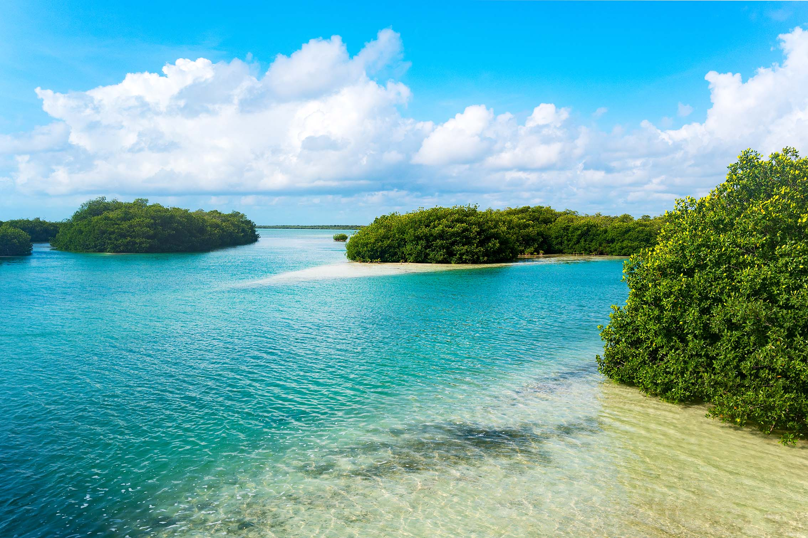
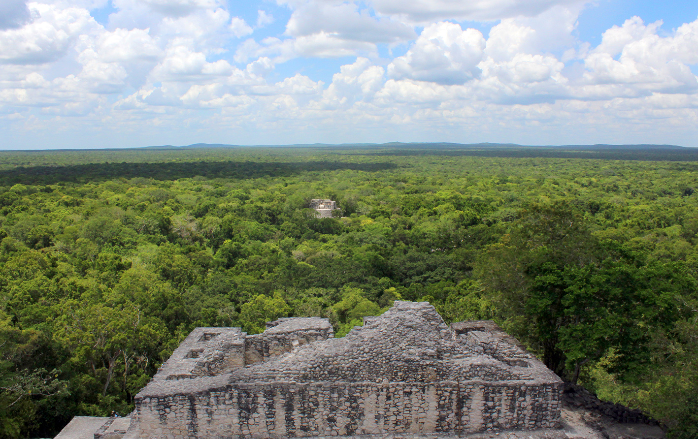
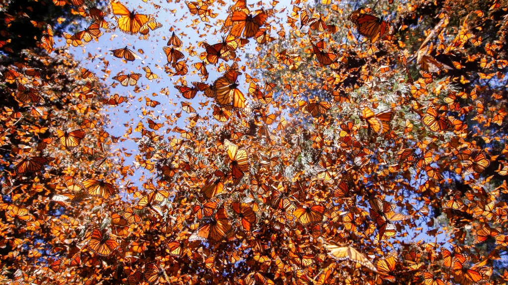
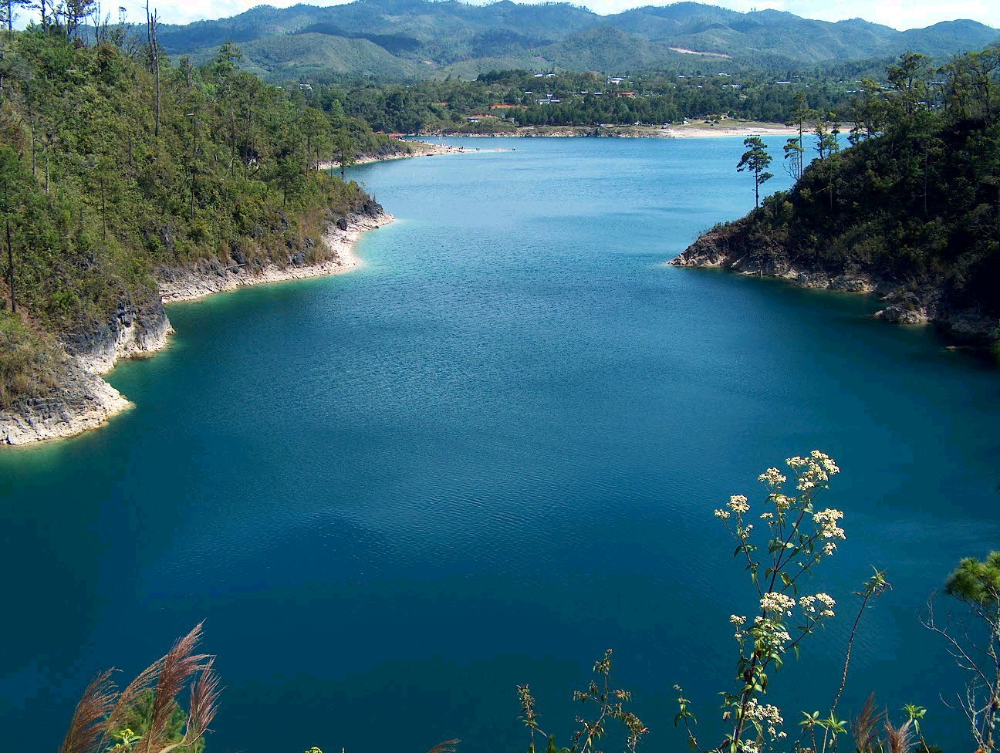
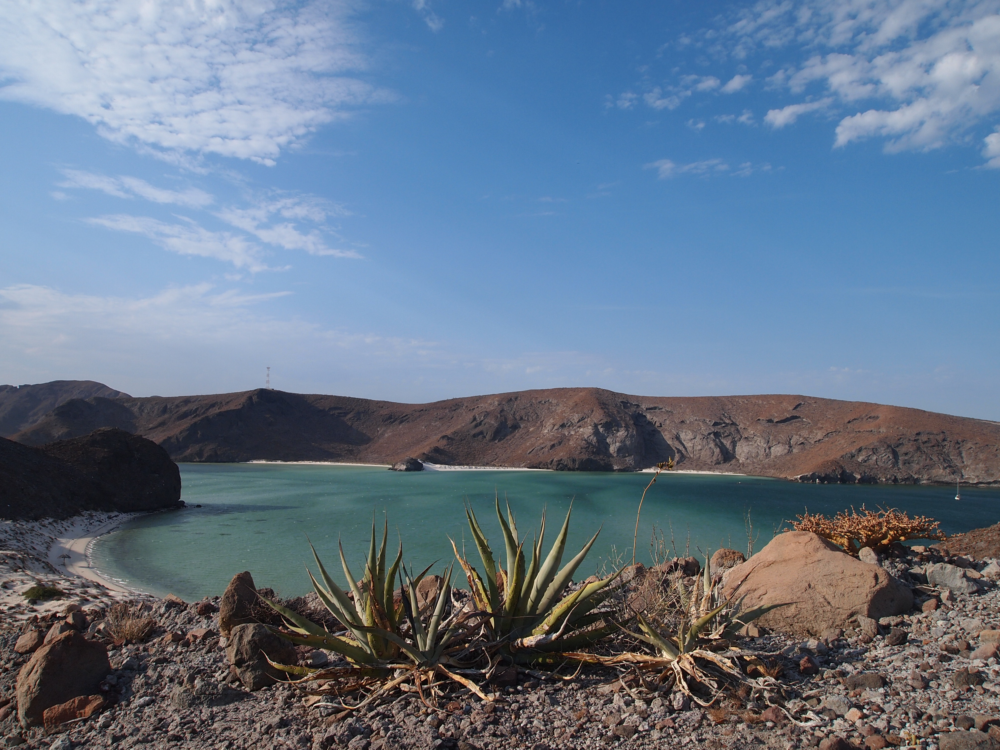
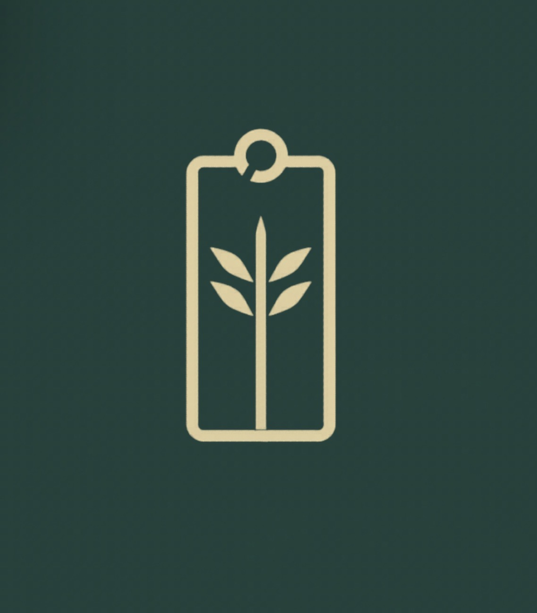

GALERÍA NATURAL
Paisajes más bellos de México







DEGRADABLE LABELODS 15 · VIDA DE ECOSISTEMAS TERRESTRES
Transformamos conciencia ambiental en acción colectiva. Diseñamos una red de información, regeneración y comunidad para proteger los ecosistemas terrestres.
Somos jóvenes comprometidas con la regeneración ambiental, la educación ecológica y la construcción de comunidades más conscientes.
Nuestro proyecto busca democratizar el conocimiento ambiental y convertir datos ecológicos en acciones reales.
Promovemos la conservación y restauración de ecosistemas terrestres.
Protegemos especies nativas y fomentamos la reforestación.
Impulsamos el cuidado de hábitats y biodiversidad local.
Creamos redes juveniles para generar impacto ambiental.
La degradación ambiental amenaza directamente la biodiversidad, la calidad del suelo y el equilibrio climático.
Por eso buscamos conectar información, diseño y acción social para inspirar cambios reales.
“La trama de la vida sostiene nuestro futuro. Cada ecosistema protegido es una posibilidad más para las próximas generaciones.”





Descubre investigaciones, proyectos y acciones para proteger los ecosistemas terrestres.
Volver al inicio